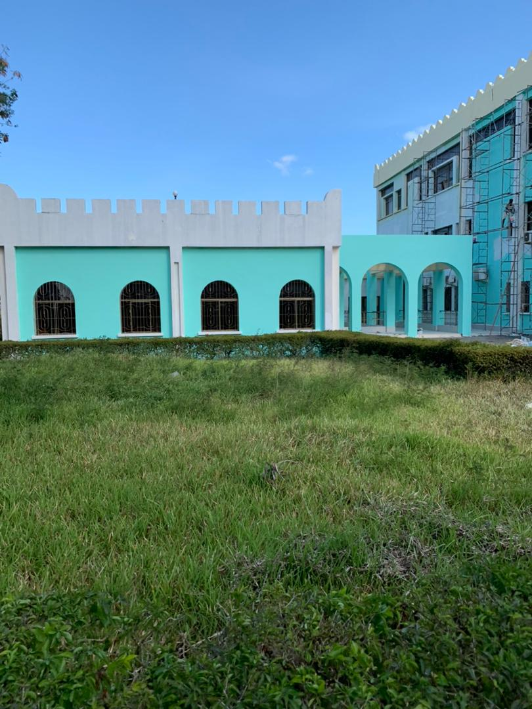

<mat-sidenav-container class="sidenav-container" >
  <mat-sidenav #drawer class="sidenav" fixedInViewport
      [attr.role]="(isHandset$ | async) ? 'dialog' : 'navigation'"
      [mode]="(isHandset$ | async) ? 'over' : 'side'"
      [opened]="(isHandset$ | async) === false" style="background-color: rgb(1, 1, 49);">
    <mat-toolbar style="background-color: darkblue;">Menu</mat-toolbar>
    
    <mat-nav-list>
      <a mat-list-item href="/home"><b style="color: white;">dashboard</b></a>
      <a mat-list-item href="#"><b style="color: white;">Booking Room</b></a>
      <a mat-list-item href="#"><b style="color: white;">Change Booking</b></a>
    </mat-nav-list>
  </mat-sidenav>

  <mat-sidenav-content>
    <mat-toolbar color="success">
 
      <button
        type="button"
        aria-label="Toggle sidenav"
        mat-icon-button
        (click)="drawer.toggle()"
        *ngIf="isHandset$ | async">
        <mat-icon aria-label="Side nav toggle icon">menu</mat-icon>
      </button>
      <span></span>
    </mat-toolbar>
     
    <router-outlet></router-outlet>
    <!-- Add Content Here -->
  </mat-sidenav-content>
</mat-sidenav-container>

